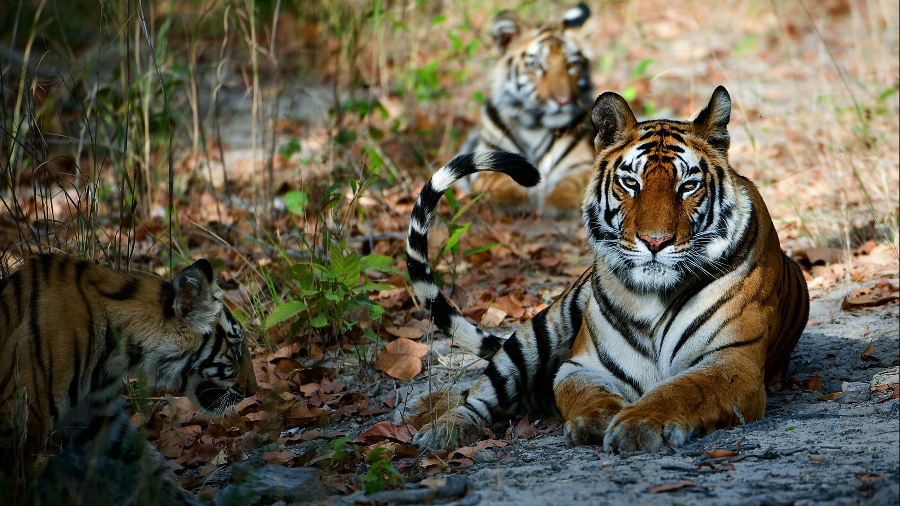

<div class="container-fluid">
  <div class="row">
    <div class="col-md-12">

      <body>
        <div class="card bg-dark text-white">
          
          <div class="card-img-overlay">
            <h2 class="card-title">Welcome to the Forts side of Maharashtra</h2>
            <p class="card-text">Explore and Enjoy the Amazing and Mesmarizing views of our beautiful Forts.</p>
            <p><b>Each of the Fort have thier own stories of braves to tell!</b></p>
          </div>
        </div>
      </body>
      <div class="row row-cols-1 row-cols-md-3 g-4">
        <div class="col">
          <div class="card mt-4">
            
            <div class="card-body">
              <h5 class="card-title">Tadoba-Andhari Tiger Reserves</h5>
              <p class="card-text">At a distance of 29 km from Chandrapur, 145 km from Nagpur, 412 km from Hyderabad,
                518 km from
                Aurangabad, 747 km from Pune, and 863 km from Mumbai,
                Tadoba - Andhari Tiger Reserve is a popular tiger reserve</p>
              <a href="tadoba-andhari-tiger-reserve" class="btn btn-primary">know More!</a>
            </div>
          </div>
        </div>
        <div class="col">
          <div class="card mt-4">
            
            <div class="card-body">
              <h5 class="card-title">Karnala Bird Sanctuary</h5>
              <p class="card-text"> Karnala was declared a bird sanctuary in 1968 as the first one of its kind in
                Maharashtra. During
                its initial phase, the sanctuary covered an area
                of 4.45 sq. km </p>
              <a href="karnala-wildlife-sanctuary" class="btn btn-primary">know More!</a>
            </div>
          </div>
        </div>
        <div class="col">
          <div class="card mt-4">
            
            <div class="card-body">
              <h5 class="card-title">Sanjay Gandhi Animal Sanctuary</h5>
              <p class="card-text">Sanjay Gandhi National Park, previously known as Borivali National Park in Mumbai is
                one of the
                popular picnic spots for locals as well as visitors
                of the city.</p>
              <a href="sanjay-gandhi-animal-sanctuary" class="btn btn-primary">know More!</a>
            </div>
          </div>
        </div>
        <div class="col">
          <div class="card mt-4">
            
            <div class="card-body">
              <h5 class="card-title">Koyna Wild Life Sanctuary</h5>
              <p class="card-text">Koyna Wildlife Sanctuary thrives in a dense, green forest reserve situated in the
                heart of Satara
                district of Maharashtra. The protected forest area
                was declared a Wildlife Sanctuary in the year 1985 by the government of India.</p>
              <a href="koyna-wildlife-sanctuary" class="btn btn-primary">know More!</a>
            </div>
          </div>
        </div>
        <div class="col">
          <div class="card mt-4">
            
            <div class="card-body">
              <h5 class="card-title">Chikhaldhara Wild Life Santuary</h5>
              <p class="card-text">The Chikhaldara Wildlife Sanctuary is located at a height of around 1118m, in the
                district of
                Amravati. It is the only hill station in Vidharbha
                region and abounds in natural beauty.</p>
              <a href="chikhaldhara-wildlife-reserve" class="btn btn-primary">know More!</a>
            </div>
          </div>
        </div>
      </div>
    </div>
  </div>
</div>